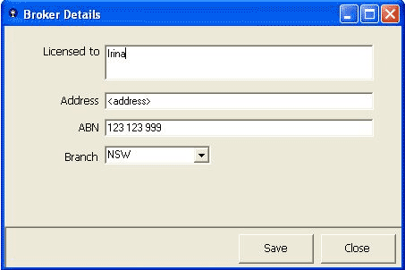
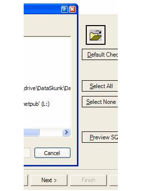

Shakshat Virtual Lab 
INDIAN INSTITUTE OF TECHNOLOGY GUWAHATI
Assignment
When a visitor visits your website, you have about 5 seconds of time, during which they need to be able to figure out the purpose of your website and how to use it. If they click a link to another page and have to figure that out all over again, you will annoy them and they will leave!
Consistency applies to the navigation, layout, colors, text formatting and to the way you present information. Your site needs to have a "standard" , by which you do things, so that your site visitors only have to figure out your way of doing things ONCE.
( Reference : http://www.badwebsiteideas.com/consistency.htm )
Find out the problems in the following interface designs:

[1]

[2]

[3]
Answers:
1. Unclear labels on the buttons : the buttons that a user will typically use to close a form should be named consistently across your applications.
We recommend the age-old standards of:
OK:Close the form and save any changed data.
Cancel : Close the form without saving.
Close: This should only be displayed if no data has and will be changed in the form's current lifetime.
Apply: Save data without closing the form.
2. Do you have a consistent look on your buttons?
There are three different styles of buttons in the application window shown in this example :
Next - Default Window Style
Preview - .NET Flat Style
Cancel - Window XP Style
3. A message box that does not intuitively alert the user. The description should explain what the error was, followed by the why it occurred. Information that is useful for debugging should be included with errors where possible be in a "Details" section. You should also avoid making the text unnecessarily wide.